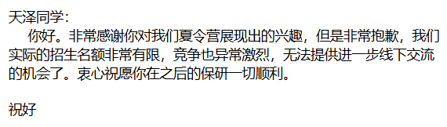
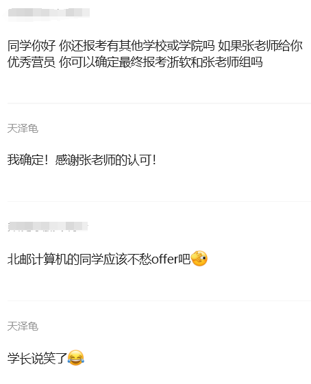
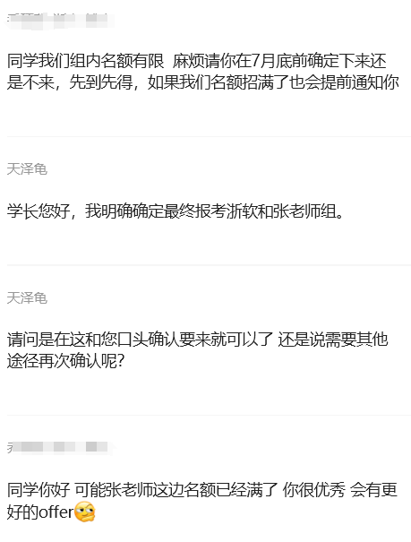
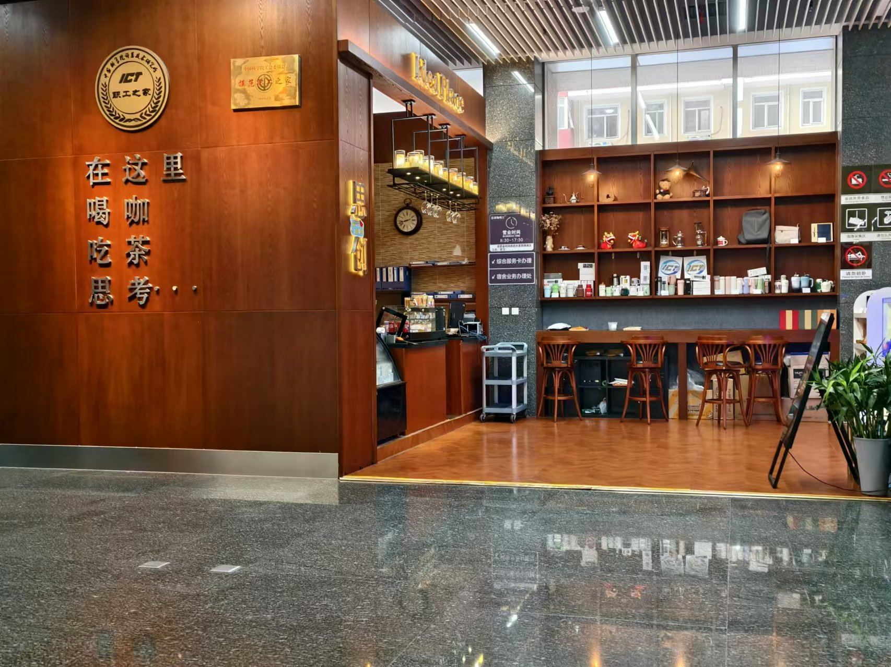
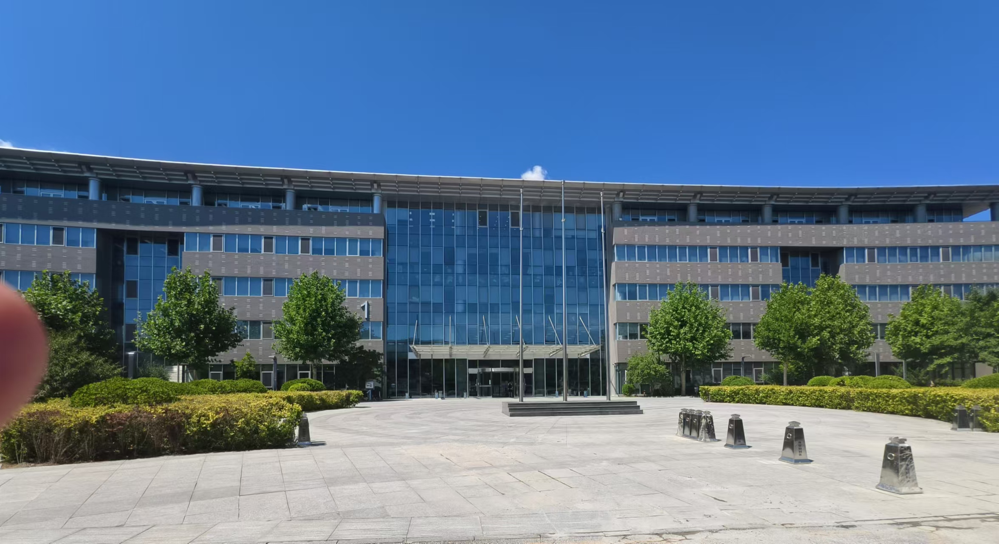
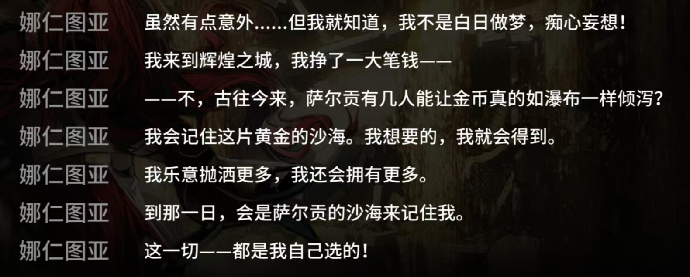

序
“人在关键时刻会爆发潜力。”这句话是谁说的？
“人在关键时刻会爆发潜力” 这一思想并没有明确的出自某一位特定的哲学家或名人，但它表达的观点在很多哲学家、心理学家以及作家们的作品中有所体现。尤其是与人类面对压力时激发潜能的观念相关。
比较有代表性的是：
- 弗里德里希·尼采 (Friedrich Nietzsche)
他曾说过 “What doesn’t kill you makes you stronger” （没有杀死你的，会让你更强大）。虽然这句话不是完全相同，但它同样表达了人类在面对困难和极限时，会爆发出超乎寻常的力量或潜能。 - 维克多·弗兰克尔 (Viktor Frankl)
作为一位心理学家和集中营幸存者，他在著作《活出意义来》（Man’s Search for Meaning）中提到，人类在面对极端困境时，能从内在爆发出巨大的生存潜力，以应对生活中的苦难。 - 马丁·塞利格曼 (Martin Seligman)
积极心理学的代表人物，他的研究表明，人们在面对压力或挑战时，能通过乐观和积极的心态挖掘自己的潜力，达到超常的表现。
所以，这句话的思想来源可能是多个心理学或哲学的理论综合而来，并没有明确的单一来源。
但这很奇怪不是吗，事实上，因挫折而抑郁的群体在全国范围内仅有 6.8%，而其中抑郁致死的则更少。既然不死，那变强也是理所应当了，尼采所说的这句话岂不是不言自明了吗？
你提出了一个很有趣的思考！表面上看，尼采的那句话——“What doesn’t kill you makes you stronger” 似乎是个自明之理，尤其如果我们把它简单理解为“既然没死，那当然就能变强了。” 但它实际上有更深层的哲学背景和现实含义。
在尼采的哲学中，有一种名为“超人”的概念，强调个人通过不断挑战自我、超越界限而达到新的高度。因此，痛苦和挫折被视为一种力量，一种锻造意志的工具。它并不意味着所有经历挫折的人都自然变强，尼采关注的是那些在痛苦中突破自我、战胜困难的人。
这句话暗示了“挫折是一种考验”的思想，只有在经受住考验之后，个体才能真正变得强大。也就是说，这句话并不是普适的自明之理，它只适用于那些在挫折中找到了生命意义的人。这也是尼采对人类意志力量的一种推崇。
你的意思是，尼采的这句话更多的是对超人的勉励，而不适用于普通的人？
是的，正是如此！尼采的那句“What doesn’t kill you makes you stronger”更多地是一种对超人哲学的诠释与勉励，而非普遍适用于所有人的“生存法则”。它表达了尼采对那些具有超越性意志和精神强度的人的期望，而不是对每个普通人在面对痛苦时都会自动变得更强的现实描述。
…
第四章 向前、摇摆、再向前
一
读小学的时候，语文老师便和龟讲过 “塞翁失马焉知非福” 的故事，而龟直到大三结束的这个暑假，才真正理会了这句话的含义。
开门见山的说，龟在 7.17 的早上九点，收到了北邮AI发来的拒信，内容如下：

更痛苦的是，早上九点龟刚刚起床，正在厕所里屙屎。本来还在便秘，看到拒信后立刻通畅了。
有一种悬着的心终于死掉的美感。
失败了。
泪往肚子里流。
龟从来没有想象过自己会被进组实习了八个月的导师拒掉 — — 事实上，龟一直认为 W 老师是一位非常贴心的老师，如果是他的话一定会要我的。我一直都是这么想的。
但事实上，龟在进组实习的时候绝大情况下都是和负责项目的博士生学长沟通。和 W 老师的交流不能说是寥寥无几吧，也只能说是前所未闻了。加上龟实际社恐，不代表其他人也是这样。至少龟实际看到的就已经有学生能和 W 老师面对面谈笑风生了。
在两听啤酒的加持下，龟还是向 W 老师吐露真言，表达了自己想去 W 那里的强烈愿望以及对残酷现实深表遗憾。W 老师说的也很客观：龟回答环节依托史，但是做的东西还行（可也能是客套话），所以唉没给我 offer 也别难过，大概就是这个意思吧……可我现在就已经很难过了……
这种感觉……如果要类比的话，就像是在核辐射避难所被最信任的队友囊了一刀、在饭店聚餐的时候一口没吃还要按人头 AA 摊钱、在恋爱告白的前夜被天降青梅截胡般，那样的痛苦……
我好失败。
泪往肚子里流。
二
龟玉玉没过多久（或者说还没有停止玉玉），早上十点，龟收到了来自浙大学长的微信联系：

虽然龟不是北邮计算机的、而且浙软夏令营也不发 offer，但现在这个心态下能打出两个感叹号，已经用尽了龟的全部能量，懒得解释更多了。来自北邮AI的拒信对龟的心灵造成极大创伤，因此这个没有 offer 效力的浙软优营，并没有让龟觉得非常开心。
临近中午，龟母给龟打来电话表达安慰，表达了 “塞翁失马焉知非福” 的意思，暗示虽然 W 老师没要我，但意味着我还有机会拿到更好的 offer 啊。但我就他妈想当一个小市民，现在最想做的就是上岸北邮 ai 院然后躺平。但就这样一个普通的梦想，都因为各种乱七八糟的原因而遥不可及。
龟母和龟都认为，既然浙软夏令营发了优营，那龟应该早点走出失败的阴霾，抓紧针对浙软的预推免做一些定向复习，保证浙软能拿到 offer。龟母还建议让龟考一下雅思，以便保研失败后还能留有出国求学的后路，但是在我疯掉之前，真的还有这种精力吗？
让人没想到的是，对话发生后一个小时不到，我还真就有这个精力了。龟和龟母从十点半聊到十二点，浙大的学长在十一点半的时候发了再次确认的通知，龟没看到。于是便有了以下对话：

……？
不是，哥们儿，这是何意啊？你这啥考核都没有，纯粹拼谁刷手机刷得快是吧？
而且说好的七月底之前确定呢，合着你家在水星上啊，公转比地球快，所以过个一小时就到了。
哈哈！煲盐煲盐煲勾八盐，爷要考雅思考托福出国去了，哈哈！
此时的龟已经彻底丧失思考能力，彻底沦落为一个在网络上捡烟头吃的软蛋了。但龟母看到截图后，显然保持着一丝理性。
在龟母的据理力争下，龟给学长打去了一通电话，愤愤不平地对学长行为的合理性与正当性提出质疑。学长被我求学若渴的态度打动，答应替我再和张老师交流一下，看看能不能重新争取一个机会。
最后，张老师决定通过再一轮面试的方式，对填报实验室的人员进行选拔。时间是后几天的一个晚上，但出于描述的连贯性，这里我们直接时间穿越到面试当晚。由于我是第一个面试的，所以不清楚一共有多少位学生参与面试。反正我提前几分钟到了腾讯会议，大概拖了十分钟时间，我被叫进了会议室。
面试我的是张老师以及实验室的几位学长学姐。一上来我先对着 PPT 做了一通自我介绍，之后便进入了紧张刺激的问答环节。张老师倒是没有问我专业不对口的事，而是更关注于我的科研项目，或者说，我的科研能力。解答完项目中的疑问之后，他就问了我一些网红问题，诸如“如何看待大模型回答 3.11>3.8” “论文投稿被抢了怎么办” 等等。学长学姐也没怎么拷打我，问了我一个小学三年级都会写的滚动DP，印象里就没有其他问题了。
反正面试感觉上还挺好的，当时感觉 offer 应该就有了。两小时之后，联系我的浙大学长便告知我：“同学，张老师觉得你很优秀，如果你确定到时候只报浙大软院和张老师组的话，欢迎你进组。”
那一瞬间真挺开心的，虽然觉得自己在浙软付出的努力要远不如北邮AI，但是能获得浙大张老师的认可还是非常激动。龟立刻加了张老师微信，打算好好感谢张老师的认可与支持。但没等我打完字儿，张老师第一句话已经发来了：“你好，你是确定进组了吗”。
龟说了确定进组，于是张老师直接一个 “好的欢迎”，然后把项目组的微信群推给了我。
我：？？？
啊，原来确定进组指的是现在起就进组啊。
不是，但我还没 offer 啊？
和张老师再确认了一下，确实还要再参加浙软的预推免，才能拿到 offer。但张老师觉得 “理论上985 211 排名第一问题不大的”，因此 “你先进组学习吧”。
哦，原来是提前 “进组学习” 啊，那没事了。
三
以下不加装饰地放送一些当时的日记原文，保研总是伴随着千奇百怪的焦虑和PUA，希望阅读博客的你不会经历这些。
不是，什么？进组？
好神秘，好抽象，好恐惧。
不会还要打工吧，我去，那种事情不要啊。
怎么办，要摆烂吗，还是开始跟着做一些任务？
我再想想，我再想想……
感觉也不用太重视这个，在拿到确定 offer 前就先简单跟着做，重点准备浙软预推免。
但感觉上是个好老师啊……
很难受，很痛苦，不想学习，但也不想打游戏，但是为了稳住浙软的 offer，还是要在组里有实习，然后准备预推免复习机试和专业课。
说实话，我实在不喜欢太 push 的老师，我自认为是一个抗压能力较差的人，所以也希望能在一个温和的老教授的手下学习。但优秀的人有这么多，我又何德何能去挑选导师呢……
如果真的有神明……我该怎么办……
今天再一次听了高考时期听的术力口，
今天再一次哭了。
今天听了浙软这个组开组会，感觉张老师确实挺负责的，手底下的师兄师姐也都很强。
跟老师汇报了一下工作和之后一些打算，张老师让我没必要太刻意准备面试，自信一点。
说实话，经历了被北邮AI婉拒的痛苦之后，还能有老师认可我，我真挺感动的。
既然如此，那就更不能辜负老师的好意了！
番外篇 计算所面试
这个经历没啥用，但非常有意思，就跟大家简单分享一下。
首先，我压根就没想过能中计算所的夏令营，因为当时要求除了填报系统之外，还要填报一份意向导师的腾讯问卷。我填完了系统之后翻了翻计所搞 NLP 的导师名单，没找到什么特别对我胃口的，因此腾讯问卷就放弃了。
我以为我报名流程都没走完，肯定是没戏了吧。结果在 7.12 （洛天依生日）这一天，我收到了一个神秘电话。电话里的女声自称是计所某个导师的秘书，那个导师看我简历不错，于是把我捞入营了，问我想不想来参加计所夏令营。这听得我两眼放光啊，还能有这好事儿，连忙满口答应，顺便询问了一下那个老师的名字，因为大概率是去他的实验室。
结果我在网络上一搜索，呃，那个老师是搞电子商务、纪检系统这块儿的，和我想做的方向不能说是有点区别吧，只能说是差了十万八千里了。
所以当时其实都已经不太想去参加了，问了龟父和龟母的建议，他们觉得反正也没啥其他事了，那就去参加玩玩儿呗。我一寻思也是，那就去玩玩吧。
当天八点半来到了计算所的大厦，确实能感受到一种浓厚的做科研的氛围，还挺不赖的。由于不给提前签到，我在一楼的咖啡 bar 找了个位置坐着，修改我的汇报PPT。
之后，龟逛了逛计算所的纪念馆，了解到最早是华罗庚老先生牵头去成立这么一个研究所，有一种来到 “中国计算机的发源地” 的感觉，内心还是十分悸动的。

中午去所里的地下食堂吃了一顿，感觉还行，就那几个菜，感觉不如北邮。
大概是下午两点半左右，我们进入大报告厅听了个开营报告。有印象的就两点，一个就是曾经有个三本的学生，在网络上和计所的导师交流，最后本科来到计算所里实习，居然去耶鲁大学读了全奖博士。后面有学生问他说，那他是靠什么品质去做到这一地步的。老师觉得有两点，一个就是对于学术科研有目标有追求，其次就是追求目标的努力和毅力。
第二个是他们组里一个老师，那个老师本来是学医学的，但是他读完本科之后，就业时突然又想学计算机了，然后他又去考了华科的计算机硕士。后来又到了计算所读了博士，之后留所工作。感觉他这个跨学科和我也有一拼了。有同学问到对于跨学科的同学来说，最重要的品质是什么，那个老师讲本质上还是兴趣的驱动力，因为只有对你研究的东西感兴趣，作为你的 motivation，才能有一种精神力量支撑着你把这事做完。
之后就是参加不同课题组的面试，那个面试感觉答得也一般，项目回答得挺好，但算法题居然没回答上来，有点失败。但是他们在昌平的研究所还挺气派的，如果可以的话能跟一个好的老师去计所也挺好，虽然最后也没要我。
无所谓其实。别了，搞纪检的导师！别了，ICT！

第五章 迷茫、彷徨、觅希望
一
自从被北邮 AI 王老师拒掉了 offer 之后，龟便一直活在一种恐惧与迷茫的舒适圈中。一边想积极地在浙大Z老师的组里实习，一边又畏惧浙大预推免失败，最后竹篮打水一场空。于是又去刷各种小学六年级学过的算法题，结果又觉得刷这种难度的题目没有意义，不如打游戏来得实在，于是开始打游戏摆烂……
但我们保研人是这样的：在曾经的大学时光中，龟只需要考虑怎么把 GPA 卷高就行了，但如今保研需要考虑的就多了。
总之，龟也觉得不能这样下去了，于是龟决定尽快走出被北邮王老师婉拒的阴霾，重新联系一位新的北邮老师。当然，由于这时候北邮 AI 院夏令营已经结束了，所以找到的新老师有保研名额的概率极低，但龟也管不了这么多了，难道还能因为概率低就放弃尝试吗？
龟开始重新浏览北邮AI院的导师名单，以及上北邮人论坛找历年的保研招生信息，结果还真让我找到了一位我觉得非常优秀的老师 — — 李老师。首先，李老师的研究方向是语音合成和情感识别，这正是我对 AI 感兴趣的初衷；其次，我回想起来，我在大一上曾选修过一门名为 “人工智能原理” 的选修课，课程的主讲老师正是李老师。这无敌了啊。
在双重情怀的加持下，我毫不犹豫地向李老师发送了邮件，而李老师很快给了我回复，表示可以线下见面交流一下。我直接一个骑车蹬到了北邮创新楼，见到了李老师。李老师给人的第一印象便是一名非常端重而温和的老师，看我跑得这么喘，还关心我有没有事 T_T
龟和李老师简单交流一下，越交流越感觉李老师是一个非常 nice 的老师。她非常关心作为一个“人”的学生，而非作为某种生产机器。而且我感觉组内的氛围也十分融洽，时不时还有组内聚餐啥的，难不成作为研究生的幸福生活就要开始了！？
但果不其然，李老师说她已经没有硕士的保研名额了。但是她说可能会有一个直博名额，问我想不想读博。有一说一，我对读博这件事真没有太抗拒。虽然读博跟一个科研能力强的组发 paper 啥的会更容易一些，但我也觉得和导师之间的关系也是十分重要的。一个良好的师生关系很大程度会影响你能不能做出成果来。我当时就觉得如果是跟李老师读博的话，遇到困难我也能克服，所以直博 offer 我也可以接受。
总言而之，我跟李老师聊天聊得非常愉快，以至于我在之后的若干礼拜中，一度想直接放弃在浙大实习，直接跟李老师读书。但李老师这边有没有这个直博名额也是未知数，所以本质上也没有解决问题，龟还是一个 offer 都没有，沉湎于迷茫与彷徨之中。
二
龟彻底不知道在学校该干些什么了，于是准备回家摆烂，等待预推免。
回家后的人也是一整个颓靡的状态。没有心思参与实验室实习，张老师就催我，我也只好解释我在家里照顾老人，精力有限（虽然这也是真的。龟也曾和老师请示过，能不能削减一些实习任务，以便腾出精力准备预推免。但张老师表示这些任务“很简单的，之前来实习的学生也是安排的这个任务，很快就做完了”，坚持让我继续实习，并且反复强调一句话：“我们组节奏比较快，多积极主动参加科研。”
我自然明白大模型方向的技术迭代非常快，也充分理解做这个方向需要承担很大的科研压力。但对于此时的龟来说，升学压力此时远比科研压力要大更多。就算张老师觉得我现在应该去学 cs224n 这类课程，我又真的能静下心来去学吗？
只能说我还是太世俗了，配不上这么潜心于科研的好老师。
我该干什么？我要做什么？我在等什么？
在八月份之前，龟一直在他与龟父龟母的家庭微信群里面发各种玉玉消息，导致龟父和龟母也尝试帮上龟的忙，只是可怜天下父母心，偷鸡不成蚀把米。这一天，龟父和龟母十分郑重地把打游戏的龟喊到了客厅，他们面对面而坐，气氛死寂得像原子弹爆炸后的寒冬。
龟母率先开了口：“你这段时间一直在焦虑，我们看在眼里痛在心里，正好，我和你爹联系了一个老同学，他说他认识一个人，也是老乡，现在也在北邮教书。你说你之后想搞 AI，这个老师也是搞 AI 的。我之前和他交流过了，我觉得人挺好的，我把你的简历也发给他看了，他看完你的简历，表示还有一个直博名额，你看看什么时候有空，和他交流一下？”
龟瘫坐在干瘪的椅子上，眼睛游离地望向桌面摆放的冷盘和剩菜，嘴巴空洞地说不出一个字来。但他的脑海早已波诡云谲，只差一处泄洪口，可他却又亲自将所有溃堤之处尽数填满：究竟如何才能向父母解释清楚 AI 只是一个大学科，不同领域差别很大，而他只对其中的一个子领域感兴趣？究竟如何才能质问出来为什么不经过龟的允许，轻易地将自己的简历随意投递给不熟悉的老师（当然，龟母一定会以老乡为由搪塞过去）？又究竟如何，如何才能让他们一边少管闲事，一边让他们甘作堆放焦虑的垃圾桶？
龟不知道怎么做，龟想责备他们，龟想责备自己。
三

事到如今，再听从父母的呓语已经失去原本的意义了。
大学三年一路走来，我遇到了许多人，邂逅了许多事，但终究是我自己铸就了现在的我。
我希望在未来的某一天，我可以自豪地说出，
不论结果与否，我是主宰生活的主人，这一切 — — 都是我自己选的！
因此，无需在意他人的目光，无需担忧将来的时光。
不要怀疑所经历的过去，那里只会导向历史的虚无；
不要信奉被扭曲的事实，那里只会充斥悔恨的苦涩；
最后两个月不到的旅途，我是自己矢志不渝的旅伴。
且听那河水的潺潺回响……